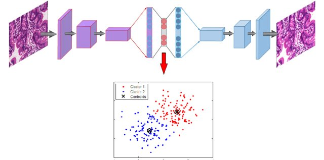
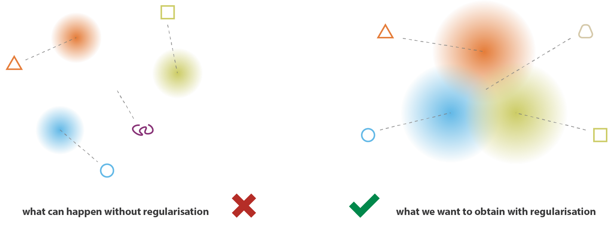
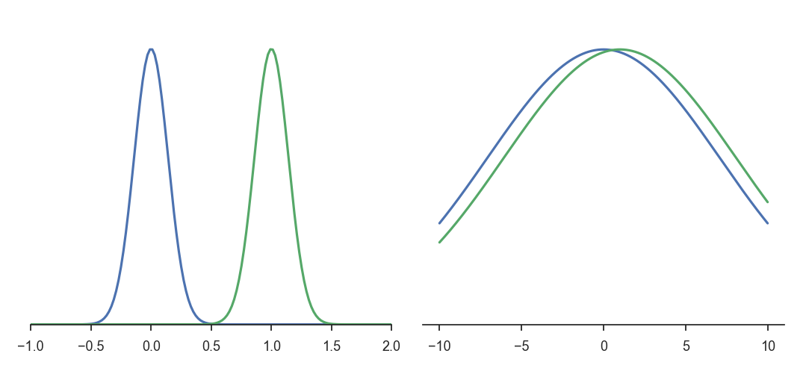
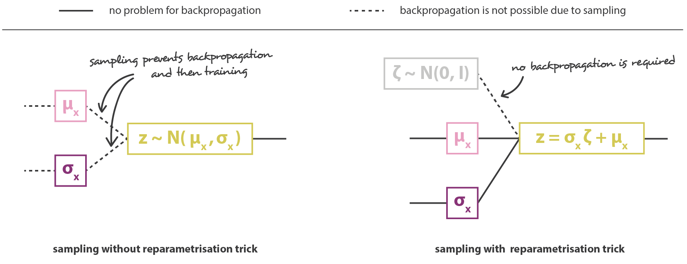
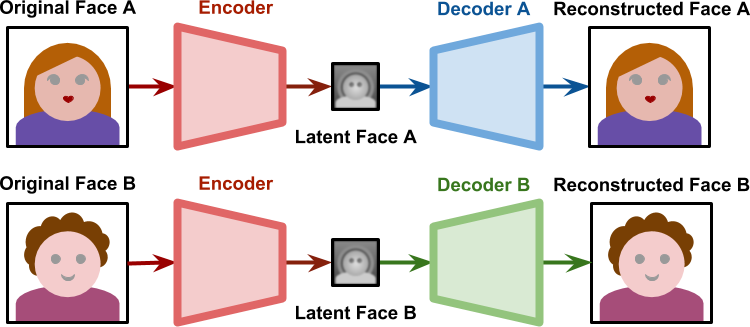
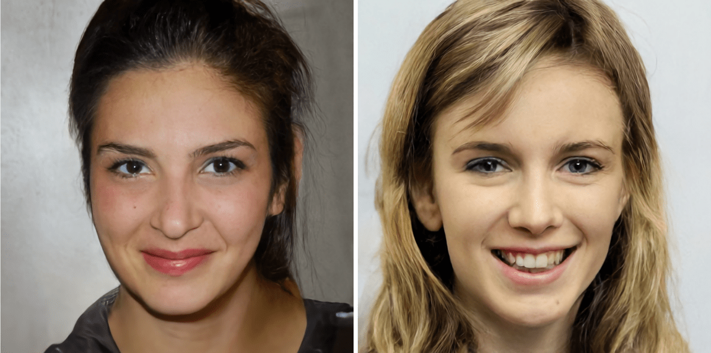
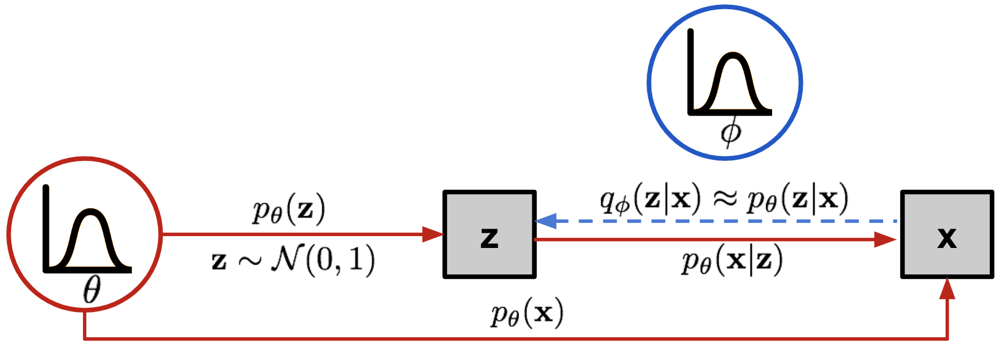

Autoencoders
Autoencoders
Supervised learning algorithms need a lot of labeled data (with \mathbf{t}) in order to learn classification/regression tasks, but labeled data is very expensive to obtain (experts, crowd sourcing). A “bad” algorithm trained with a lot of data will perform better than a “good” algorithm trained with few data.
“It is not who has the best algorithm who wins, it is who has the most data.”
Unlabeled data is only useful for unsupervised learning, but very cheap to obtain (camera, microphone, search engines). Can we combine efficiently both approaches? Self-taught learning or semi-supervised learning.
An autoencoder is a NN trying to learn the identity function f(\mathbf{x}) = \mathbf{x} using a different number of neurons in the hidden layer than in the input layer.

An autoencoder minimizes the reconstruction loss between the input \mathbf{x} and the reconstruction \mathbf{x'}, for example the mse between the two vectors:
\mathcal{L}_\text{reconstruction}(\theta) = \mathbb{E}_{\mathbf{x} \in \mathcal{D}} [ ||\mathbf{x'} - \mathbf{x}||^2 ]
An autoencoder uses unsupervised learning: the output data used for learning is the same as the input data: No need for labels!
By forcing the projection of the input data on a feature space with less dimensions (latent space), the network has to extract relevant features from the training data: Dimensionality reduction, compression.
If the latent space has more dimensions than the input space, we need to constrain the autoencoder so that it does not simply learn the identity mapping. Below is an example of a sparse autoencoder trained on natural images (Olshausen and Field, 1997).

Inputs are taken from random natural images and cut in 10*10 patches. 100 features are extracted in the hidden layer. The autoencoder is said sparse because it uses L1-regularization to make sure that only a few neurons are active in the hidden layer for a particular image. The learned features look like what the first layer of a CNN would learn, except that there was no labels at all! Can we take advantage of this to pre-train a supervised network?
Stacked autoencoders
In supervised learning, deep neural networks suffer from many problems: local minima, vanishing gradients, long training times… All these problems are due to the fact that the weights are randomly initialized at the beginning of training. Pretraining the weights using unsupervised learning allows to start already close to a good solution: the network will need less steps to converge, the gradients will vanish less and less data will be needed to learn a particular supervised task.
Let’s try to learn a stacked autoencoder by learning progressively each feature vector.

Using unlabeled data, train an autoencoder to extract first-order features, freeze the weights and remove the decoder.

Train another autoencoder on the same unlabeled data, but using the previous latent space as input/output.

Repeat the operation as often as needed, and finish with a simple classifier using the labeled data.

This defines a stacked autoencoder, trained using Greedy layer-wise learning. Each layer progressively learns more and more complex features of the input data (edges - contour - forms - objects): feature extraction. This method allows to train a deep network on few labeled data: the network will not overfit, because the weights are already in the right region. It solves gradient vanishing, as the weights are already close to the optimal solution and will efficiently transmit the gradient backwards. One can keep the pre-trained weights fixed for the classification task or fine-tune all the weights as in a regular DNN.
Deep autoencoders
Semi-supervised learning
Autoencoders are not restricted to a single hidden layer.
- The encoder goes from the input space \mathbf{x} to the latent space \mathbf{z}.
\mathbf{z} = g_\phi(\mathbf{x})
- The decoder goes from the latent space \mathbf{z} to the output space \mathbf{x'}.
\mathbf{x'} = f_\theta(\mathbf{z})

The latent space is a bottleneck layer of lower dimensionality, learning a compressed representation of the input which has to contain enough information in order to reconstruct the input. Both the encoder with weights \phi and the decoder with weights \theta try to minimize the reconstruction loss:
\mathcal{L}_\text{reconstruction}(\theta, \phi) = \mathbb{E}_{\mathbf{x} \in \mathcal{D}} [ ||f_\theta(g_\phi(\mathbf{x})) - \mathbf{x}||^2 ]
Learning is unsupervised: we only need input data.
The encoder and decoder can be anything: fully-connected, convolutional, recurrent, etc. When using convolutional layers, the decoder has to upsample the latent space: max-unpooling or transposed convolutions can be used as in segmentation networks.

In semi-supervised or self-taught learning, we can first train an autoencoder on huge amounts of unlabeled data, and then use the latent representations as an input to a shallow classifier on a small supervised dataset.

A linear classifier might even be enough if the latent space is well trained. The weights of the encoder can be fine-tuned with backpropagation, or remain fixed.
Denoising autoencoders
A denoising autoencoder (DAE, (Vincent et al., 2010)) is trained with noisy inputs (some pixels are dropped) but perfect desired outputs. It learns to suppress that noise.


Deep clustering
Clustering algorithms (k-means, Gaussian Mixture Models, spectral clustering, etc) can be applied in the latent space to group data points into clusters. If you are lucky, the clusters may even correspond to classes.

Variational autoencoders (VAE)
Motivation
Autoencoders are deterministic: after learning, the same input \mathbf{x} will generate the same latent code \mathbf{z} and the same reconstruction \mathbf{\tilde{x}}. Sampling the latent space generally generates non-sense reconstructions, because an autoencoder only learns data samples, it does not learn the underlying probability distribution.

The main problem of supervised learning is to get enough annotated data. Being able to generate new images similar to the training examples would be extremely useful (data augmentation).
In order for this to work, we need to regularize the latent space: Close points in the latent space should correspond to close images. “Classical” L1 or L2 regularization does not ensure the regularity of the latent space.

Architecture
The variational autoencoder (VAE) (Kingma and Welling, 2013) solves this problem by having the encoder represent the probability distribution q_\phi(\mathbf{z}|\mathbf{x}) instead of a point \mathbf{z} in the latent space.
This probability distribution is then sampled to obtain a vector \mathbf{z} that will be passed to the decoder p_\theta(\mathbf{z}). The strong hypothesis is that the latent space follows a normal distribution with mean \mathbf{\mu_x} and variance \mathbf{\sigma_x}^2.
\mathbf{z} \sim \mathcal{N}(\mathbf{\mu_x}, \mathbf{\sigma_x}^2)
The two vectors \mathbf{\mu_x} and \mathbf{\sigma_x}^2 are the outputs of the encoder.

The normal distribution \mathcal{N}(\mu, \sigma^2) is fully defined by its two parameters:
- \mu is the mean of the distribution.
- \sigma^2 is its variance.
The probability density function (pdf) of the normal distribution is defined by the Gaussian function:
f(x; \mu, \sigma) = \frac{1}{\sqrt{2\,\pi\,\sigma^2}} \, e^{-\displaystyle\frac{(x - \mu)^2}{2\,\sigma^2}}
A sample x will likely be close to \mu, with a deviation defined by \sigma^2. It can be obtained using a sample of the standard normal distribution \mathcal{N}(0, 1):
x = \mu + \sigma \, \xi \; \; \text{with} \; \xi \sim \mathcal{N}(0, 1)
Architecture of the VAE:
- The encoder q_\phi(\mathbf{z}|\mathbf{x}) outputs the parameters \mathbf{\mu_x} and \mathbf{\sigma_x}^2 of a normal distribution \mathcal{N}(\mathbf{\mu_x}, \mathbf{\sigma_x}^2).
- We sample one vector \mathbf{z} from this distribution: \mathbf{z} \sim \mathcal{N}(\mathbf{\mu_x}, \mathbf{\sigma_x}^2).
- The decoder p_\theta(\mathbf{z}) reconstructs the input.

Open questions:
- Which loss should we use and how do we regularize?
- Does backpropagation still work?
Loss function of a VAE
The loss function used in a VAE is of the form:
\mathcal{L}(\theta, \phi) = \mathcal{L}_\text{reconstruction}(\theta, \phi) + \mathcal{L}_\text{regularization}(\phi)
The first term is the usual reconstruction loss of an autoencoder which depends on both the encoder and the decoder. One could simply compute the mse (summed over all pixels) between the input and the reconstruction:
\mathcal{L}_\text{reconstruction}(\theta, \phi) = \mathbb{E}_{\mathbf{x} \in \mathcal{D}, \mathbf{z} \sim q_\phi(\mathbf{z}|\mathbf{x})} [ ||p_\theta(\mathbf{z}) - \mathbf{x}||^2 ]
In the expectation, \mathbf{x} is sampled from the dataset \mathcal{D} while \mathbf{z} is sampled from the encoder q_\phi(\mathbf{z}|\mathbf{x}). In (Kingma and Welling, 2013), pixels values are normalized between 0 and 1, the decoder uses the logistic activation function for its output layer and the binary cross-entropy loss function is used:
\mathcal{L}_\text{reconstruction}(\theta, \phi) = \mathbb{E}_{\mathbf{x} \in \mathcal{D}, \mathbf{z} \sim q_\phi(\mathbf{z}|\mathbf{x})} [ - \log p_\theta(\mathbf{z})]
The justification comes from variational inference and evidence lower-bound optimization (ELBO) but is out of the scope of this lecture.
The second term is the regularization term for the latent space, which only depends on the encoder with weights \phi:
\mathcal{L}_\text{regularization}(\phi) = \text{KL}(q_\phi(\mathbf{z}|\mathbf{x}) || \mathcal{N}(\mathbf{0}, \mathbf{1})) = \text{KL}(\mathcal{N}(\mathbf{\mu_x}, \mathbf{\sigma_x}^2) || \mathcal{N}(\mathbf{0}, \mathbf{1}))
It is defined as the Kullback-Leibler divergence between the output of the encoder and the standard normal distribution \mathcal{N}(\mathbf{0}, \mathbf{1}). Think of it as a statistical “distance” between the distribution q_\phi(\mathbf{z}|\mathbf{x}) and the distribution \mathcal{N}(\mathbf{0}, \mathbf{1}). The principle is not very different from L2-regularization, where we want the weights to be as close as possible from 0. Here we want the encoder to be as close as possible from \mathcal{N}(\mathbf{0}, \mathbf{1}).
Why do we want the latent distributions to be close from \mathcal{N}(\mathbf{0}, \mathbf{1}) for all inputs \mathbf{x}? \mathcal{L}(\theta, \phi) = \mathcal{L}_\text{reconstruction}(\theta, \phi) + \text{KL}(q_\phi(\mathbf{z}|\mathbf{x}) || \mathcal{N}(\mathbf{0}, \mathbf{1}))
By forcing the distributions to be close, we avoid “holes” in the latent space: we can move smoothly from one distribution to another without generating non-sense reconstructions.

To make q_\phi(\mathbf{z}|\mathbf{x}) close from \mathcal{N}(\mathbf{0}, \mathbf{1}), one could minimize instead the Euclidian distance in the parameter space:
\mathcal{L}(\theta, \phi) = \mathcal{L}_\text{reconstruction}(\theta, \phi) + (||\mathbf{\mu_x}||^2 + ||\mathbf{\sigma_x} - 1||^2)
However, this does not consider the overlap between the distributions. The two pairs of distributions below have the same distance between their means (0 and 1) and the same variance (1 and 10 respectively). The distributions on the left are very different from each other, but the distance in the parameter space is the same.

The KL divergence between two random distributions X and Y measures the statistical distance between them. It describes, on average, how likely a sample from X could come from Y:
\text{KL}(X ||Y) = \mathbb{E}_{x \sim X}[- \log \frac{P(Y=x)}{P(X=x)}]

When the two distributions are equal almost anywhere, the KL divergence is 0. Otherwise it is positive. Minimizing the KL divergence between two distributions makes them close in the statistical sense.
The advantage of minimizing the KL of q_\phi(\mathbf{z}|\mathbf{x}) with \mathcal{N}(0, 1) is that the KL takes a closed form when the distributions are normal, i.e. there is no need to compute the expectation over all possible latent representations \mathbf{z}:
\mathcal{L}_\text{regularization}(\phi) = \text{KL}(q_\phi(\mathbf{z}|\mathbf{x}) || \mathcal{N}(\mathbf{0}, \mathbf{1})) = \mathbb{E}_{\mathbf{x} \in \mathcal{D}, \mathbf{z} \sim q_\phi(\mathbf{z}|\mathbf{x})}[- \log \frac{f_{0, 1}(\mathbf{z}|\mathbf{x})}{q_\phi(\mathbf{z}|\mathbf{x})}]
If \mathbf{\mu_x} and \mathbf{\sigma_x} have K elements (dimension of the latent space), the KL can be expressed as:
\mathcal{L}_\text{regularization}(\phi) = \mathbb{E}_{\mathbf{x} \in \mathcal{D}}[\dfrac{1}{2} \, \sum_{k=1}^K (\mathbf{\sigma_x^2} + \mathbf{\mu_x}^2 - 1 - \log \mathbf{\sigma_x^2})]
The KL is very easy to differentiate w.r.t \mathbf{\mu_x} and \mathbf{\sigma_x}, i.e. w.r.t \phi! In practice, the encoder predicts the vectors \mathbf{\mu_x} and \Sigma_\mathbf{x} = \log \mathbf{\sigma_x^2}, so the loss becomes:
\mathcal{L}_\text{regularization}(\phi) = \dfrac{1}{2} \, \sum_{k=1}^K (\exp \Sigma_\mathbf{x} + \mathbf{\mu_x}^2 - 1 - \Sigma_\mathbf{x})
See https://wiseodd.github.io/techblog/2016/12/10/variational-autoencoder/ for the proof.
Regularization tends to create a “gradient” over the information encoded in the latent space. A point of the latent space sampled between the means of two encoded distributions should be decoded in an image in between the two training images.

Reparameterization trick
The second problem is that backpropagation does not work through the sampling operation. It is easy to backpropagate the gradient of the loss function through the decoder until the sample \mathbf{z}. But how do you backpropagate to the outputs of the encoder: \mathbf{\mu_x} and \mathbf{\sigma_x}?
Modifying slightly \mathbf{\mu_x} or \mathbf{\sigma_x} may not change at all the sample \mathbf{z} \sim \mathcal{N}(\mathbf{\mu_x}, \mathbf{\sigma_x}^2), so you cannot estimate any gradient.
\frac{\partial \mathbf{z}}{\partial \mathbf{\mu_x}} = \; ?
Backpropagation does not work through a sampling operation, because it is not differentiable.
\mathbf{z} \sim \mathcal{N}(\mathbf{\mu_x}, \mathbf{\sigma_x}^2)
The reparameterization trick consists in taking a sample \xi out of \mathcal{N}(0, 1) and reconstruct \mathbf{z} with:
\mathbf{z} = \mathbf{\mu_x} + \mathbf{\sigma_x} \, \xi \qquad \text{with} \qquad \xi \sim \mathcal{N}(0, 1)

The sampled value \xi \sim \mathcal{N}(0, 1) becomes just another input to the neural network.

It allows to transform \mathbf{\mu_x} and \mathbf{\sigma_x} into a sample \mathbf{z} of \mathcal{N}(\mathbf{\mu_x}, \mathbf{\sigma_x}^2):
\mathbf{z} = \mathbf{\mu_x} + \mathbf{\sigma_x} \, \xi
We do not need to backpropagate through \xi, as there is no parameter to learn! The neural network becomes differentiable end-to-end, backpropagation will work.
Summary
A variational autoencoder is an autoencoder where the latent space represents a probability distribution q_\phi(\mathbf{z} | \mathbf{x}) using the mean \mathbf{\mu_x} and standard deviation \mathbf{\sigma_x} of a normal distribution. The latent space can be sampled to generate new images using the decoder p_\theta(\mathbf{z}). KL regularization and the reparameterization trick are essential to VAE.
\begin{aligned} \mathcal{L}(\theta, \phi) &= \mathcal{L}_\text{reconstruction}(\theta, \phi) + \mathcal{L}_\text{regularization}(\phi) \\ &= \mathbb{E}_{\mathbf{x} \in \mathcal{D}, \xi \sim \mathcal{N}(0, 1)} [ - \log p_\theta(\mathbf{\mu_x} + \mathbf{\sigma_x} \, \xi) + \dfrac{1}{2} \, \sum_{k=1}^K (\mathbf{\sigma_x^2} + \mathbf{\mu_x}^2 -1 - \log \mathbf{\sigma_x^2})] \\ \end{aligned}

The two main applications of VAEs in unsupervised learning are:
- Dimensionality reduction: projecting high dimensional data (images) onto a smaller space, for example a 2D space for visualization.
- Generative modeling: generating samples from the same distribution as the training data (data augmentation, deep fakes) by sampling on the manifold.
Advanced VAE
DeepFake
DeepFakes now became very easy, you can for example find DeepFace here: https://github.com/iperov/DeepFaceLab.


\beta-VAE
VAE does not use a regularization parameter to balance the reconstruction and regularization losses. What happens if you do?
\begin{aligned} \mathcal{L}(\theta, \phi) &= \mathcal{L}_\text{reconstruction}(\theta, \phi) + \beta \, \mathcal{L}_\text{regularization}(\phi) \\ &= \mathbb{E}_{\mathbf{x} \in \mathcal{D}, \xi \sim \mathcal{N}(0, 1)} [ - \log p_\theta(\mathbf{\mu_x} + \mathbf{\sigma_x} \, \xi) + \dfrac{\beta}{2} \, \sum_{k=1}^K (\mathbf{\sigma_x^2} + \mathbf{\mu_x}^2 -1 - \log \mathbf{\sigma_x^2})] \\ \end{aligned}
Using \beta > 1 puts emphasis on learning statistically independent latent factors.
The \beta-VAE (Higgins et al., 2016) allows to disentangle the latent variables, i.e. manipulate them individually to vary only one aspect of the image (pose, color, gender, etc.).

See https://worldmodels.github.io/ for a live demo in the RL context.
VQ-VAE
Deepmind researchers proposed VQ-VAE-2 (Razavi et al., 2019), a hierarchical VAE using vector-quantized priors able to generate high-resolution images.


Conditional variational autoencoder (CVAE)
What if we provide the labels to the encoder and the decoder during training?

When trained with labels, the conditional variational autoencoder (CVAE (Sohn et al., 2015)) becomes able to sample many images of the same class.

CVAE allows to sample as many samples of a given class as we want: data augmentation.

The condition does not need to be a label, it can be a shape or another image (passed through another encoder).

Variational inference (optional)
Learning probability distributions from samples
The input data X comes from an unknown distribution P(X). The training set \mathcal{D} is formed by samples of that distribution. Learning the distribution of the data means learning a parameterized distribution p_\theta(X) that is as close as possible from the true distribution P(X). The parameterized distribution could be a family of known distributions (e.g. normal) or a neural network with a softmax output layer.

This means that we want to minimize the KL between the two distributions:
\min_\theta \, \text{KL}(P(X) || p_\theta(X)) = \mathbb{E}_{x \sim P(X)} [- \log \dfrac{p_\theta(X=x)}{P(X=x)}]
The problem is that we do not know P(X) as it is what we want to learn, so we cannot estimate the KL directly.
In supervised learning, we are learning the conditional probability P(T | X) of the targets given the inputs, i.e. what is the probability of having the label T=t given the input X=x. A NN with a softmax output layer represents the parameterized distribution p_\theta(T | X). The KL between the two distributions is:
\text{KL}(P(T | X) || p_\theta(T | X)) = \mathbb{E}_{x, t \sim \mathcal{D}} [- \log \dfrac{p_\theta(T=t | X=x)}{P(T=t | X=x)}]
With the properties of the log, we know that the KL is the cross-entropy minus the entropy of the data:
\begin{aligned} \text{KL}(P(T | X) || p_\theta(T | X)) &= \mathbb{E}_{x, t \sim \mathcal{D}} [- \log p_\theta(T=t | X=x)] - \mathbb{E}_{x, t \sim \mathcal{D}} [- \log P(T=t | X=x)] \\ &\\ & = H(P(T | X), p_\theta(T |X)) - H(P(T|X)) \\ \end{aligned}
When we minimize the KL by applying gradient descent on the parameters \theta, only the cross-entropy will change, as the data does not depends on the model:
\begin{aligned} \nabla_\theta \, \text{KL}(P(T | X) || p_\theta(T | X)) & = \nabla_\theta \, H(P(T | X), p_\theta(T |X)) - \nabla_\theta \, H(P(T|X)) \\ &\\ & = \nabla_\theta \, H(P(T | X), p_\theta(T |X)) \\ & \\ & = \nabla_\theta \, \mathbb{E}_{x, t \sim \mathcal{D}} [- \log p_\theta(T=t | X=x) ]\\ \end{aligned}
Minimizing the cross-entropy (negative log likelihood) of the model on the data is the same as minimizing the KL between the two distributions in supervised learning! We were actually minimizing the KL all along.
When trying to learn the distribution P(X) of the data directly, we could use the same trick:
\nabla_\theta \, \text{KL}(P(X) || p_\theta(X)) = \nabla_\theta \, H(P(X), p_\theta(X)) = \nabla_\theta \, \mathbb{E}_{x \sim X} [- \log p_\theta(X=x)]
i.e. maximize the log-likelihood of the model on the data X. If we use N data samples to estimate the expectation, we notice that:
\mathbb{E}_{x \sim X} [\log p_\theta(X=x)] \approx \dfrac{1}{N} \, \sum_{i=1}^N \log p_\theta(X=x_i) = \dfrac{1}{N} \, \log \prod_{i=1}^N p_\theta(X=x_i) = \dfrac{1}{N} \, \log L(\theta)
is indeed the log-likelihood of the model on the data that we maximized in maximum likelihood estimation.
The problem is that images are highly-dimensional (one dimension per pixel), so we would need astronomical numbers of samples to estimate the gradient (once): curse of dimensionality.

MLE does not work well in high-dimensional spaces. We need to work in a much lower-dimensional space.
Latent space
Images are not random samples of the pixel space: natural images are embedded in a much lower-dimensional space called a manifold. A manifold is a locally Euclidian topological space of lower dimension: The surface of the earth is locally flat and 2D, but globally spherical and 3D.
If we have a generative model telling us how a point on the manifold z maps to the image space (P(X | z)), we would only need to learn the distribution of the data in the lower-dimensional latent space.

The low-dimensional latent variables z are the actual cause for the observations X. Given a sample z on the manifold, we can train a generative model p_\theta(X | z) to recreate the input X. p_\theta(X | z) is the decoder: given a latent representation z, what is the corresponding observation X?

If we learn the distribution p_\theta(z) of the manifold (latent space), we can infer the distribution of the data p_\theta(X) using that model:
p_\theta(X) = \mathbb{E}_{z \sim p_\theta(z)} [p_\theta(X | z)] = \int_z p_\theta(X | z) \, p_\theta(z) \, dz
Problem: we do not know p_\theta(z), as the only data we see is X: z is called a latent variable because it explains the data but is hidden.
Variational inference
To estimate p_\theta(z), we could again marginalize over X:
p_\theta(z) = \mathbb{E}_{x \sim p_\theta(X)} [p_\theta(z | x)] = \int_x p_\theta(z | x) \, p_\theta(x) \, dx
p_\theta(z | x) is the encoder: given an input x \sim p_\theta(X), what is its latent representation z? The Bayes rule tells us:
p_\theta(z | x) = p_\theta(x |z) \, \dfrac{p_\theta(z)}{p_\theta(x)}
The posterior probability (encoder) p_\theta(z | X) depends on the model (decoder) p_\theta(X|z), the prior (assumption) p_\theta(z) and the evidence (data) p_\theta(X).
We get:
p_\theta(z) = \mathbb{E}_{x \sim p_\theta(X)} [p_\theta(x |z) \, \dfrac{p_\theta(z)}{p_\theta(x)}]
The posterior is untractable as it would require to integrate over all possible inputs x \sim p_\theta(X):
p_\theta(z) = \mathbb{E}_{x \sim p_\theta(X)} [p_\theta(x |z) \, \dfrac{p_\theta(z)}{p_\theta(x)}] = \int_x p_\theta(x |z) \, p_\theta(z) \, dx
Variational inference proposes to approximate the true encoder p_\theta(z | x) by another parameterized distribution q_\phi(z|x).

The decoder p_\theta(x |z) generates observations x from a latent representation x with parameters \theta. The encoder q_\phi(z|x) estimates the latent representation z of a generated observation x. It should approximate p_\theta(z | x) with parameters \phi.
To make q_\phi(z| X) close from p_\theta(z | X), we minimize their KL divergence:
\begin{aligned} \text{KL}(q_\phi(z|X) || p_\theta(z | X) ) &= \mathbb{E}_{z \sim q_\phi(z|X)} [- \log \dfrac{p_\theta(z | X)}{q_\phi(z|X)}]\\ \end{aligned}
Note that we sample the latent representations from the learned encoder q_\phi(z|X) (imagination). As p_\theta(z | X) = p_\theta(X |z) \, \dfrac{p_\theta(z)}{p_\theta(X)}, we get:
\begin{aligned} \text{KL}(q_\phi(z|X) || p_\theta(z | X) ) &= \mathbb{E}_{z \sim q_\phi(z|X)} [- \log \dfrac{p_\theta(X | z) \, p_\theta(z)}{q_\phi(z|X) \, p_\theta(X)}]\\ &=\mathbb{E}_{z \sim q_\phi(z|X)} [- \log \dfrac{p_\theta(z)}{q_\phi(z|X)}] - \mathbb{E}_{z \sim q_\phi(z|X)} [- \log p_\theta(X)] \\ &+ \mathbb{E}_{z \sim q_\phi(z|X)} [- \log p_\theta(X | z)]\\ \end{aligned}
p_\theta(X) does not depend on z, so its expectation w.r.t z is constant:
\begin{aligned} \text{KL}(q_\phi(z|X) || p_\theta(z | X) ) &= \text{KL}(q_\phi(z|X) || p_\theta(z)) + \log p_\theta(X) + \mathbb{E}_{z \sim q_\phi(z|X)} [- \log p_\theta(X | z)]\\ \end{aligned}
We rearrange the terms:
\begin{aligned} \log p_\theta(X) - \text{KL}(q_\phi(z|X) || p_\theta(z | X) ) &= - \mathbb{E}_{z \sim q_\phi(z|X)} [- \log p_\theta(X | z)] - \text{KL}(q_\phi(z|X) || p_\theta(z))\\ \end{aligned}
- Training the encoder means that we minimize \text{KL}(q_\phi(z|X) || p_\theta(z | X) ).
- Training the decoder means that we maximize \log p_\theta(X) (log-likelihood of the model).
- Training the encoder and decoder together means that we maximize:
\text{ELBO}(\theta, \phi) = \log p_\theta(X) - \text{KL}(q_\phi(z|X) || p_\theta(z | X) )
The KL divergence is always positive or equal to 0, so we have:
\text{ELBO}(\theta, \phi) \leq \log p_\theta(X)
This term is called the evidence lower bound (ELBO): by maximizing it, we also maximize the untractable evidence \log p_\theta(X), which is what we want to do. The trick is that the right-hand term of the equation gives us a tractable definition of the ELBO term:
\begin{aligned} \text{ELBO}(\theta, \phi) &= \log p_\theta(X) - \text{KL}(q_\phi(z|X) || p_\theta(z | X) ) \\ &\\ &= - \mathbb{E}_{z \sim q_\phi(z|X)} [- \log p_\theta(X | z)] - \text{KL}(q_\phi(z|X) || p_\theta(z)) \end{aligned}
What happens when we minimize the negative ELBO?
\mathcal{L}(\theta, \phi) = - \text{ELBO}(\theta, \phi) = \mathbb{E}_{z \sim q_\phi(z|X)} [- \log p_\theta(X | z)] + \text{KL}(q_\phi(z|X) || p_\theta(z))
\mathbb{E}_{z \sim q_\phi(z|X)} [- \log p_\theta(X | z)] is the reconstruction loss of the decoder p_\theta(X | z):
- Given a sample z of the encoder q_\phi(z|X), minimize the negative log-likelihood of the reconstruction p_\theta(X | z).
\text{KL}(q_\phi(z|X) || p_\theta(z)) is the regularization loss for the encoder:
- The latent distribution q_\phi(z|X) should be too far from the prior p_\theta(z).
Variational autoencoders use \mathcal{N}(0, 1) as a prior for the latent space, but any other prior could be used.
\begin{aligned} \mathcal{L}(\theta, \phi) &= \mathcal{L}_\text{reconstruction}(\theta, \phi) + \mathcal{L}_\text{regularization}(\phi) \\ &\\ &= \mathbb{E}_{\mathbf{x} \in \mathcal{D}, \mathbf{z} \sim q_\phi(\mathbf{z}|\mathbf{x})} [ - \log p_\theta(\mathbf{z})] + \text{KL}(q_\phi(\mathbf{z}|\mathbf{x}) || \mathcal{N}(\mathbf{0}, \mathbf{1}))\\ \end{aligned}
The reparameterization trick and the fact that the KL between normal distributions has a closed form allow us to use backpropagation end-to-end. The encoder q_\phi(z|X) and decoder p_\theta(X | z) are neural networks in a VAE, but other parametrized distributions can be used (e.g. in physics).